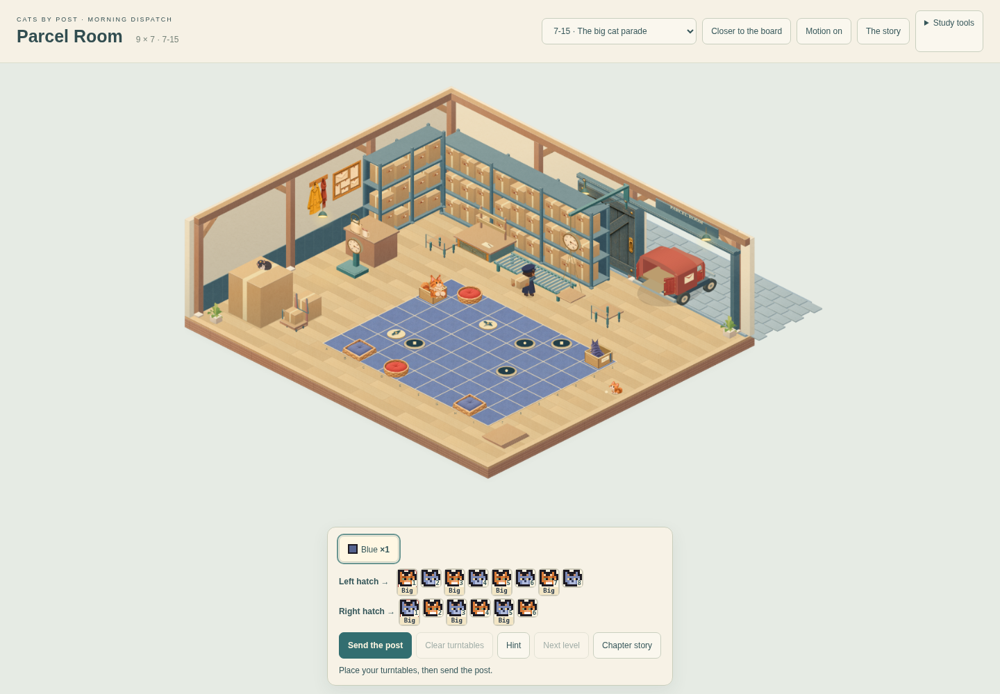
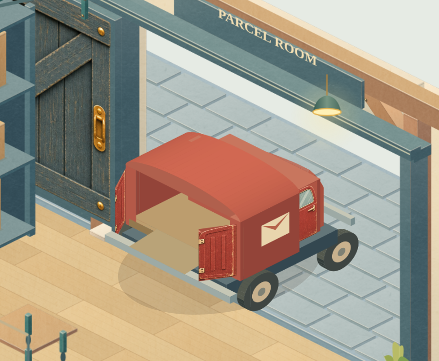

CATS BY POST · MORNING DISPATCH · 14 NOVEMBER 2026Parcel Room: construction review
Step 1 of the rebuild. Frame, shelving, scales and loading geometry are ready to inspect. Materials, lighting, workstation detail and town context remain later work.
Maximum board · 9 × 7
Before: rejected study
After: construction stepSame delivery and room framing. Overall art fidelity is still in progress.
Inspect the assemblies
Loading bay · ten sampled states
The original vehicle clock and route are retained. These samples show arrival, rear loading, closure and departure; they are not a continuous recording.

Actual runtime renders at the canonical frame numbers. Wheels meet the yard at its zero-height surface.
Published construction preview. No source merge or final integration. Canonical gameplay, level records, timing and saves remain unchanged. Physical-device performance has not been qualified.